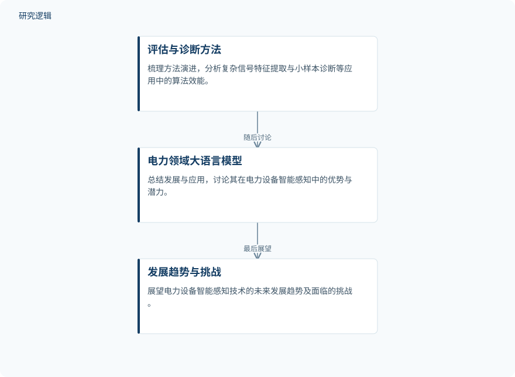

摘要解读
面向电力设备状态感知的前沿人工智能：应用与趋势
State‐of‐the‐Art Artificial Intelligence for Condition Perception of Power Equipment: Applications and Trends
解读更新 2026-10-22 23:03 · 依据公开摘要整理，未核验全文细节
电力设备运行环境日趋复杂，人工智能如何帮助判断设备状态、识别故障？这篇综述围绕状态评估与故障诊断梳理技术演进，并讨论大语言模型的应用潜力，为理解智能运维的研究版图提供入口。
文章目录
复杂运行环境对设备状态感知提出新要求
随着碳达峰、碳中和目标推进及新型电力系统建设，电力设备面临更加复杂的运行环境。摘要指出，传统运维策略已难以满足电网安全稳定运行的需求，设备状态感知因此成为值得关注的问题。
本文将讨论聚焦于状态评估与故障诊断两条主线。对于智能运维读者，这一框架有助于明确综述的任务范围，而不是把不同用途的人工智能方法笼统视为同一种解决方案。
沿方法演进、工程应用与大模型展开综述
这是一篇综述，摘要明确介绍的是文献梳理与分析框架，而非一套新提出的诊断算法。作者首先回顾电力设备状态评估和故障诊断方法的演进，并分析智能算法在复杂信号特征提取、小样本诊断等工程应用中的效能。
随后，文章总结大语言模型在电力领域的发展与应用，讨论其用于设备智能感知的优势和潜力，最后展望相关技术的发展趋势与挑战。摘要未交代文献检索、筛选及质量评价的具体流程。
依据摘要整理的综述展开顺序


仅概括摘要明确陈述的综述环节及先后关系，不代表实验流程，也不是论文原图。
下载 SVG图示关系说明
实线表示相邻阶段的信息流，虚线表示跨阶段联系或反馈。
评估与诊断方法 → 电力领域大语言模型：随后讨论；电力领域大语言模型 → 发展趋势与挑战：最后展望
摘要强调大模型潜力，未给出算法优劣排名
摘要传达的主要认识是：复杂信号特征提取与小样本诊断是智能算法的重要应用议题，大语言模型也已进入电力领域的应用讨论。作者特别强调了大语言模型在电力设备智能感知中的优势与潜力。
不过，摘要没有报告具体算法的比较结果、性能指标或改善幅度。因此，不能据此认定某类模型优于传统方法，也不能将大语言模型的潜力表述为已经验证的运维效果。本文在摘要层面呈现的价值，主要是系统梳理与趋势讨论。
样本、比较条件与验证范围仍需查阅正文
仅凭摘要，无法判断所涉及研究的设备类型、样本规模、数据来源、比较基线，以及验证是否覆盖不同运行条件；也无法确认各类算法的工程效能如何被衡量。这些属于当前资料无法核实的范围，不意味着论文没有讨论或相关研究没有开展验证。
阅读启发：把应用潜力与工程证据分开看
阅读启发：进一步阅读时，可沿状态评估和故障诊断两条主线，关注复杂信号处理与小样本问题分别对应哪些方法和证据。对于大语言模型，建议重点核对其具体承担的任务、支持优势判断的比较依据，以及作者如何区分已有应用与未来展望，而不先预设它能够替代现有诊断方法。
以上为本站阅读启发与建议，不是论文已验证的结论。